Platform-wide
These features work everywhere, in every app, for every role.
Ten languages
Everything a customer sees is available in ten languages: English, Thai, French, German, Dutch, Spanish, Italian, Chinese, Korean, and Japanese. This covers the booking form, confirmation emails, the customer app, and all waiver text. The system picks the right language automatically, based on what the customer chose. A shop can even set a different preparation video for each language, and each customer automatically sees the right one.

Who did what
The system keeps track of who did key actions. Every payment records who collected it. Every deleted booking records who deleted it, and why. Every salary payment records who marked it as paid. This makes it easy to check back later, if there is ever a question about something.

Keeping your data safe
Shop data is not stored on any one phone or computer. It is stored securely online. If a phone is lost or broken, no shop data is lost with it. The system saves a full backup automatically, every 30 minutes. This backup is kept in a separate, secure location — not the same place the everyday data lives. This means there are always two safe copies.

Works everywhere, even offline
Every app installs to a phone's home screen, like a normal app. No app store is needed. The staff apps, and the public booking form, still work with a weak or lost connection. Actions are saved and sent once the connection comes back. This means staff on a boat with bad signal are never blocked from doing their job.

Push notifications
Besides chat, DiveTower sends alerts to staff about things that need attention: a booking still missing an instructor, taxi, or boat for tomorrow; a late booking waiting for approval; a customer's insurance details, sent automatically before their dive day; and a review request, sent to customers after their trip.

Master App
Complete control of your shop. One place for bookings, money, staff, and everything else.
The Day tab
The Day tab shows every booking for the day. It shows who is diving, their activity, language, instructor, pickup method and time, resort, meal, and boat or trip. You can give different dives of one activity to different instructors. If something important is missing, the field turns red: no instructor, no driver for taxi pickup, no time for boat pickup, no resort, no meal, or no boat. For each day, you can create trips — a boat going out at a particular time, with a set number of dive slots. Each slot can be named freely, or set to "Confined" with one tap. You can select many bookings at once to set bulk changes. Trips from the day before are copied automatically to save time.

Claims
Sometimes an instructor collects payment directly, out on the boat. When this happens, the instructor sends a claim. This says what they collected. They can do this for one customer, or for several at once. The master then confirms receiving the money in the shop.
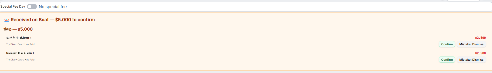
Customer Details
Tapping a booking opens the full customer record. It shows contact details: language, email, phone, nationality, age, date of birth, with a button to email the customer directly. It shows gear sizes and calculates BCD, wetsuit, and fin size. It shows diving level, dive count, and last dive. It shows meal preference. It shows waiver badges for liability, medical, and snorkel — each showing signed or not. A clear warning badge shows if the customer has a medical issue. If a customer has a doctor's fit-to-dive declaration, they can upload a photo instead of just ticking the medical box. If a booking is cancelled, a refund banner appears with an undo button. From this screen, staff can move the booking to a new date, see all past payments, get a link to send the customer, or show a QR code for the customer's app.

The Week tab
The Week tab shows the same booking information for a full week.

Money Overview
Shows all the shop's money information in one place. Four boxes are always shown, no matter which time period is selected: money paid today, money still owed by customers, money owed to agents and resorts, and refunds that still need a decision. If a customer pays an agent directly, that amount is removed from what the shop owes the agent — this happens automatically. Staff can pick a longer period: a week, a month, a year, or a custom range. For a single day, this shows a simple list of payments. For a longer period, it shows income and unpaid amounts, broken down six ways: by activity, by payment method, by instructor, by nationality, by language, and by resort. Each breakdown has a table and a bar chart. There is also a meal count, payment method summary, and totals. Staff can send an invoice from here — for a single customer, or a combined invoice for an entire group of bookings from one agent or resort.

The Salary tab
The Salary tab shows, for each instructor, what they are owed and what is still pending. The "owed" list is a table showing date, customer, activity, dive progress, and the salary or commission amount. Each instructor gets a subtotal. One button marks everything as paid. A second list shows work that is not finished yet — this is kept separate so it does not get mixed up with money that is ready to pay. When two instructors share one day, each instructor is only paid for their own part. If nothing shows on either list, a "why?" link explains the reason.

The Ratings tab
The Ratings tab shows customer feedback from post-dive rating emails. Customers rate their general experience (1-5 stars) and instructor (1-5 stars). It displays mean ratings overall, by activity, and by instructor. It shows the click-through rate to Google reviews. The ratings table shows each customer's name, activity, dive date, general rating, instructor name, instructor rating, and the date they clicked the Google review link. Ratings are collected automatically the day after each customer's last dive.

The Search tab
The Search tab lets you search customers using more than 20 fields. Some are dropdowns: nationality, language, dive level, meal, activity, booking source, who booked them, payment method, resort, instructor. Some are free text: name, email, phone, passport, room, notes. Some are yes/no filters: medical issue, certified, registered with agency, own gear, snorkel waiver signed, e-learning done.

The DiveAgency tab
The DiveAgency tab has two simple lists. One list shows customers who still need agency registration. The other list shows customers who still need their certification finished. Each row shows name, activity, email, date of birth, date, and instructor. There is a button to mark it done, and a button to dismiss it.

The Gear tab
The Gear tab shows shortage alerts at the top. Below that is the result of the shop's automatic gear allocation for the day. Below that is the full equipment list — item names and counts come from ScubaKit automatically, synced in every 15 minutes. If a customer's height, weight, or shoe size is missing, staff get an alert. This way, nobody is left without gear assigned. Staff can set a rental price for each item.

The Private Boat tab
The Private Boat tab is a form to book a whole boat for a group. It is separate from normal activity bookings, because people on a private boat may not have their activities decided yet. It asks for: date, boat, an optional lead booker name, their email, their WhatsApp, number of people, the boat fee, and payment method.

The Pickups tab
The Pickups tab shows a live map. It shows every driver and every instructor's current position. It updates every 30 seconds. There is also a simple list view.

Chat
Chat works inside the master app too. There are group channels for each role: Masters, Instructors, Taxi, Kitchen, Boat Crew. There are direct one-to-one messages. There are also customer chats — one for general shop questions, and a second one that goes straight to the customer's current instructor. Chat supports photos. It shows if a message has been read. It shows an unread count in the app. On phones that support it, it also shows a badge on the home screen icon.
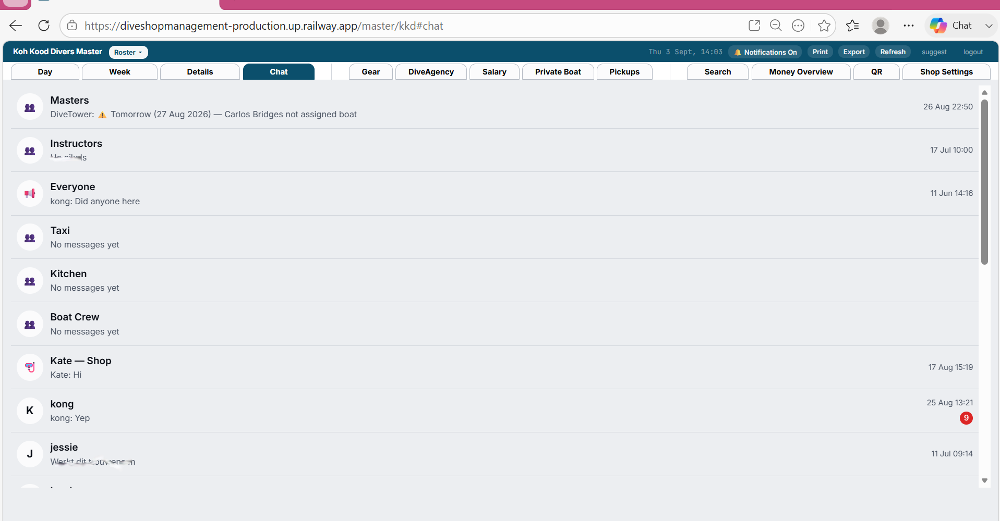
The QR tab
The QR tab has QR codes for the shop, for each instructor, and for each resort's own booking page.

The top bar
The top bar is always visible, no matter which tab is open. It shows the current date and time. It has a button to turn on notifications. It has a Refresh button to reload the current tab. On a computer screen, there are three more buttons: Print prints whatever tab is open. Export downloads the current tab's data as a spreadsheet file. A "suggest" button sends feedback. There is also a Roster button. This opens a menu to print a clean roster for any single boat.

Shop Settings
Configure everything about how your shop works, in one organized place.
Team & Staff
Manages every role. Masters need a name, email, and password. Instructors also need: agency registration number, phone, WhatsApp, email, commission rate, nationality, languages, a photo, a toggle for logging in on days off, whether they're allowed to offer Pay Later on their own bookings, whether their own app shows their QR code, whether their own app shows an "Open booking form" button, and a date range for when they are unavailable. Drivers are the same, but instead of languages they have a maximum passenger number. Boat crew have the same Pay Later and QR/booking-link toggles as instructors and drivers. Kitchen staff just need name, phone, WhatsApp, email, and password. Boat types are also set up here: name and passenger capacity. Each role also gets its own QR code, so a new staff member can install their app right away.

Resorts & Agents
Stores each resort's pickup time, email, an automatic booking link and QR code, and their commission rate. Agents get a name, email, and commission rate. A separate table holds the shop's general commission rates. These can be changed for a specific resort or a specific activity. You can also enter a booking from an agent or resort using a fast form: pick the agent, pick the date, and list the people. There is a shortcut to add several people at once.

Activities & Pricing
Sets up everything about one activity in a single place: price, number of days, salary, certification cost, which agency it belongs to, whether it needs another certification first, and salary per dive. Right below that, the same screen also sets the activity's day-by-day structure — which dive slots happen on which day, and what gear each day needs. Number of dives is worked out automatically from that structure. Instructors see this as a checklist and check items off as the course happens.

Special Fee Day
For marine park or national park fees. A shop can set one or more date ranges, each with its own pattern. Ranges cannot overlap. There are separate fees for diving and snorkeling. Each of those splits into four amounts: local adult, local child, foreign adult, foreign child. Staff can also turn the fee on or off manually for any single day.

Payments
Lists every payment method the shop accepts: cash, QR codes, and five online providers (Stripe, PayPal, PayMongo, Opn, HitPay). Each online provider needs a connection link, set up once with that provider. This section also has the shop's currency (the full list of world currencies, over 100), and manual exchange rates for US dollars and euros.
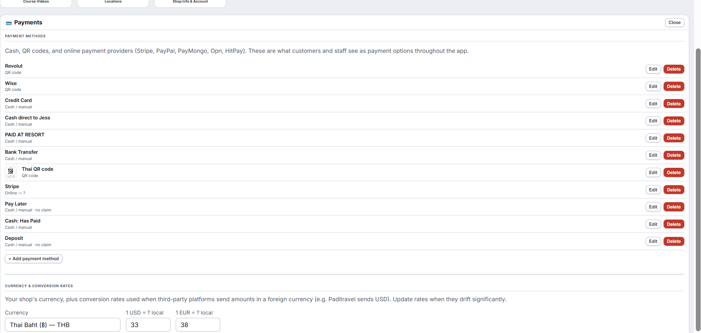
Gear & Equipment
Shows every item and size in the shop's ScubaKit, synced in automatically every 15 minutes. It shows total count, broken/unusable count, and available count (calculated automatically, with a color warning when low). You can set the rental price shown to customers. If ScubaKit has an item under a name the system doesn't recognize yet, staff get a one-time prompt to say what it actually is.

Booking Sources
Holds the shop's booking source list. It also holds settings for reading booking emails automatically from other platforms, and the email address a shop uses for that.

Waivers
Covers the cancellation policy: how many days' notice is needed, and the time cutoff for when last bookings of the day are accepted. Staff can see exactly what text the customer will read. Shops can upload their own waiver documents instead of using the built-in ones. All waiver text is available in every supported language.
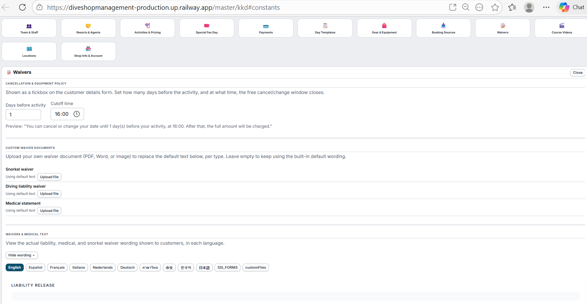
Course Videos
A shop can add one or more videos to any course. Each video has a name you choose (e.g. "Theory video PADI"), an agency (PADI, SSI, etc. or "Any"), the courses it belongs to, and a link for each language. A course can have more than one video. If a student's agency has no matching video, they are shown the "Any" video instead. If there is no video at all for that course, nothing is shown.

Locations
Manages the shop's map. Each business added gets a name, a category, a pin on the map, a description, and an optional discount code. Shops create their own categories, each with an emoji and a name.
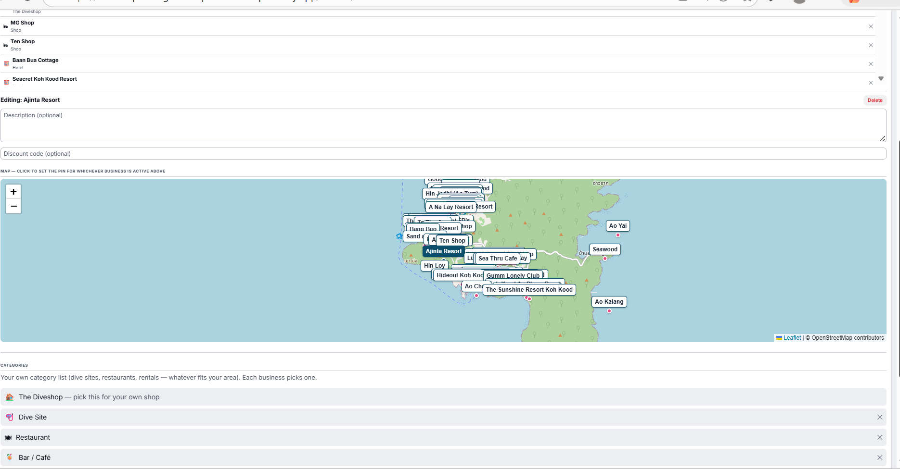
Shop Info & Account
Holds: certifying agency, shop name, WhatsApp number, email sender name, main email, a separate email for insurance notices, timezone, the meal list, and links to Google reviews and Google Maps.

Trash
Trash holds deleted bookings. When staff delete a booking, they can leave a short reason why. Staff can restore a deleted booking, or delete it forever. If the customer's money was kept and not refunded, staff can mark this. That way, the income still counts in the shop's reports.
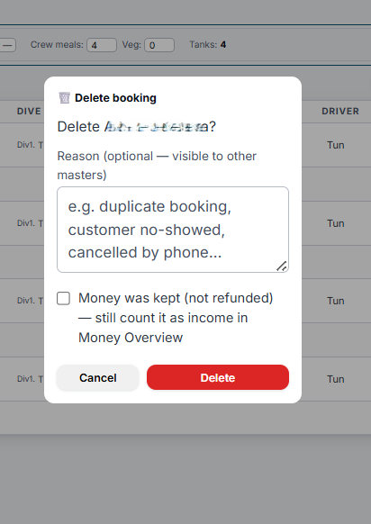
Pending Late
Pending Late is a list of bookings made after the shop's daily cutoff time. A master must approve or reject each one. They do not confirm automatically.

Instructor app
Everything you need in the water and on the boat. Students, gear, checklist, money all in one app.
Students
A toggle switches between "My Students" (just this instructor's own) and "All Students" for the day. Every student appears as its own card. Tapping a card opens the full detail: meal and dietary note, certification level, number of dives, nationality, age, height, weight, shoe size, and notes. If the booking is cancelled, a refund banner appears with an undo button. A checklist covers confined water, each numbered dive, and the night dive. Each dive can have its own instructor. A waivers section shows whether liability, safe-diving, medical, and youth waivers are signed. For certification courses, there is a section for e-learning, agency registration, the agency code, and final certification. SSI Open Water students see their full completion record: every session and skill, plus both signatures.
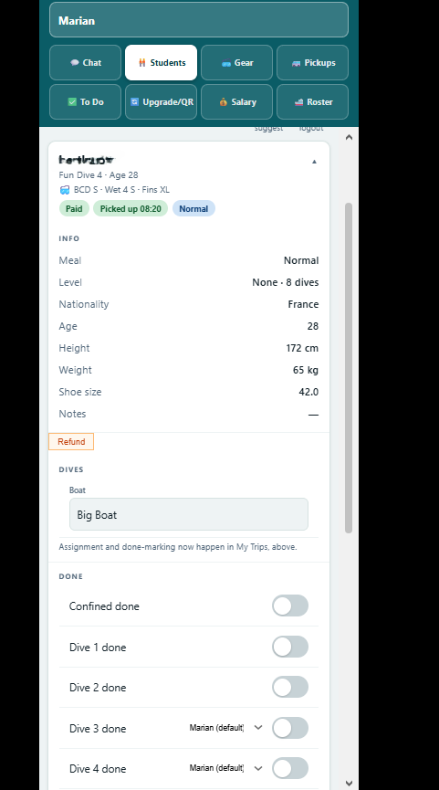
Gear
Shows gear four ways: this instructor's own students first (sizes, or a note that they bring their own gear, plus any rentals), then every boat for the day grouped together regardless of instructor, then a shop-wide count of how many of each item are needed today against how many are actually usable, flagging any shortage. Below that is the full inventory, synced from ScubaKit.
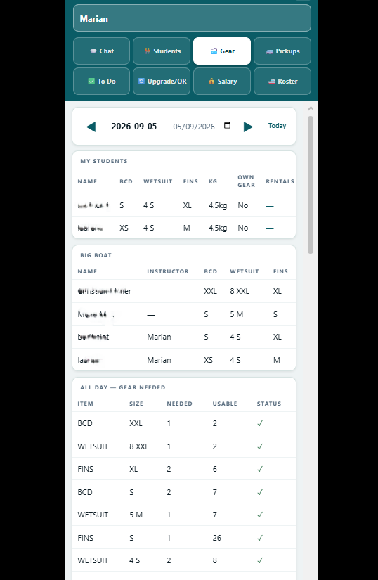
Pickups
Shows the same live driver map and pickup list available in the master app's Pickups tab, scoped to what's relevant for this instructor's day. A "Call a driver" button lets the instructor call or WhatsApp any driver directly.
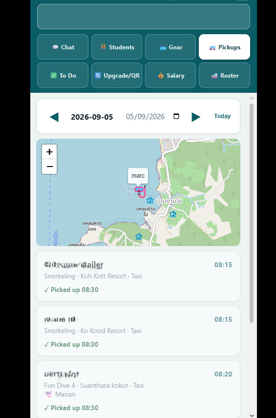
To Do
A filtered list of exactly which students still need something today: an outstanding balance, a missing waiver, missing e-learning or registration for a certification course, or an incomplete SSI completion record. Anyone with nothing outstanding simply does not appear.

Upgrade/QR
Where an instructor actually collects money. Selecting a student shows their outstanding balance, with a way to record what was received and how, or show a QR code for the student to pay directly. The same screen lets the instructor upgrade a student to a different activity, entering the new price and optionally collecting a deposit for it on the spot. Below that is the instructor's own personal booking QR code and link — bookings made through it are tracked back to that instructor for commission.
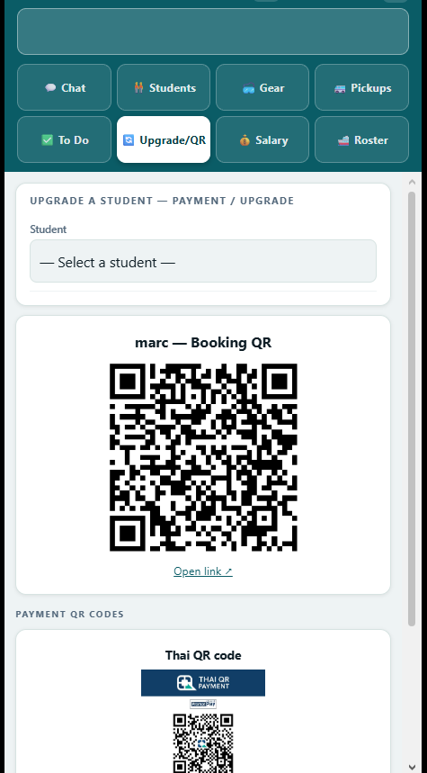
Salary
Shows what this instructor is owed: total salary and commission, then a breakdown per student with a row of small dots showing exactly which dives are marked done. A separate section covers work that is not eligible for payment yet, because it has not been marked done.
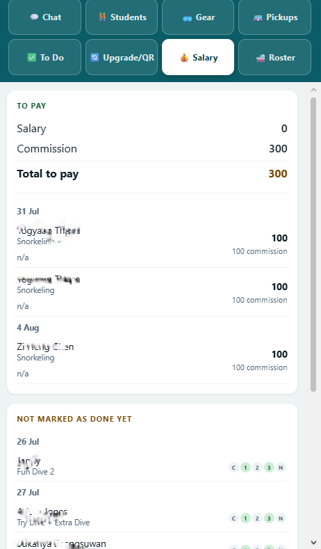
Roster
A shop-wide view of every trip for the day, not just this instructor's own — everyone's boat, pax count, and tank count in one place. Each trip lists the boatmaster, then every student grouped by which instructor is running them, with any per-dive instructor difference shown as a small note. Useful for checking who else is out that day.
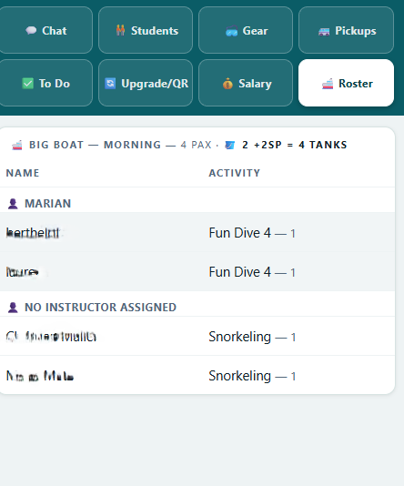
Chat
The same group channels as the master app — Masters, Instructors, Taxi, Kitchen, Boat Crew — plus direct messages to anyone in them, and the same customer chats, scoped to this instructor's own students. An Announcements thread receives anything broadcast to everyone.
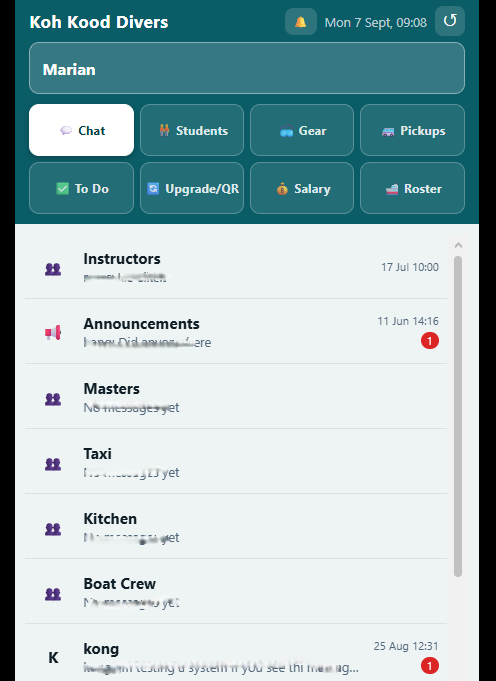
Taxi app
Know exactly who to pick up, when, where. Call or WhatsApp customers direct from the app.
Pickups
Pickups shows a sorted list of who to pick up and when. Each card shows the resort (with a color), room number, and activity. There are one-tap buttons to call or WhatsApp the customer. There is a button to mark them picked up. Finished pickups turn grey but stay visible, until every pickup for the day is done.

Return drop-offs
A separate list. It groups by trip. It sorts by which boat is arriving soonest. Each student has their own "dropped off" button. Shows the live location of any customer who has chosen to share it. It updates every 30 seconds. A separate map shows the current location of every instructor.

Chat
The same group channels as the other apps — Masters, Instructors, Taxi, Kitchen, Boat Crew — plus direct messages to anyone in them, using the driver's own real name, since drivers log in individually now. There are no customer-specific chat threads here, unlike the instructor app.
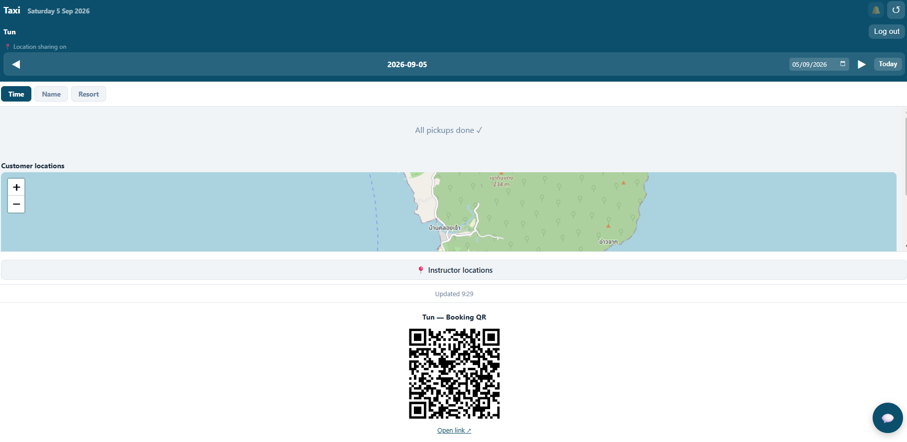
Kitchen app
See exactly how many meals you need, today and this month. Dietary notes for every customer.
The kitchen app is one simple screen. It shows live counts for each meal type needed that day and a monthly count. It shows a list of customers with special dietary notes. It refreshes on its own every two minutes.

Boat crew app
See every trip, every boat, every person. Know when drivers are heading back.
The boat crew app is small. It has chat, the same trip roster that instructors and masters see, and a pickups view with a live driver map. It also shows the personal QR code for bookings.

Customer app
Everything they need before, during, and after their dive. Transparent, simple, reassuring.
Pickup tab
Shows their next pickup time, once one is set. There is a button to share their live location, so the driver can find them. Once a driver is on the way, a map appears showing the driver's position and the customer's own position, so they can watch the driver approach. It also shows their past pickups.

My Diving tab
It shows a button to watch a preparation video, matched to their language and agency. If there is no exact match, it falls back to a good choice. There is a button for a summary of the open water theory text, with practice questions. It may show a QR code confirming agency certification. It shows a day-by-day schedule: which boat and which instructor each day. It shows a progress section: e-learning status if they are registered, a checkmark for each finished dive, and an overall percentage. It shows their gear: either "own gear," or their exact BCD, wetsuit, fin, and weightbelt sizes. SSI Open Water students also see their own copy of the completion record. They cannot edit it, except they can add their own signature. They can also clear their signature if it was added by mistake.

Locations tab
Shows a map. The shop's own location is always pinned. Every other business the shop has added is also shown, each with its own icon for its category. Below the map, the same places are listed in full, with description and discount code shown directly.

My Details tab
Shows a payment summary — total, paid, and balance — followed by the customer's full booking information, which they can edit here. This is the same form used everywhere else in the system.

Chat tab
Lets the customer message the shop. Once they have a current instructor, they can also message that instructor directly, as a second option.

Public booking form
Customers book online. Prices show live. Everything is clear before they pay.
A customer booking online picks a date. They add one or more people to the booking. Each person needs a name, an email, and an activity. Prices show live as they pick. They can also add rental gear. If an activity needs an existing certification, the form checks this automatically. A review screen then shows: each person's price, any rentals, the total, the date, and the payment method. This is shown before they pay. Checkout supports five payment providers. If someone tries to book too late for a same-day or next-day slot, the system explains why and offers the next available date. Staff booking a customer in person get two extra things: a lookup that finds returning customers by name and fills in their details, and the ability to add a discount or pay later.